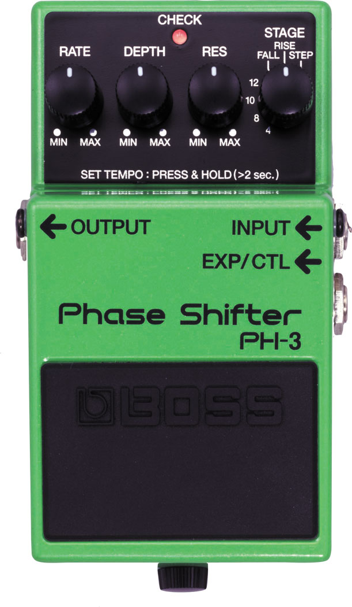

Shenzhen Mooer Audio Co., Ltd. es una compañía ubicada en Shenzhen, China. Es una empresa innovadora dedicada a la fabricación de pedales de guitarra en miniatura que permiten ahorrar espacio en la pedalera sin sacrificar el sonido. Esta compañía está especializada en construir accesorios musicales, siendo su fuerte los pedales de guitarra eléctrica, buscando posicionarse como la compañía líder en pedales miniaturizados que ofrecen alta calidad. Los pedales de guitarra en miniatura Mooer tienen las siguientes características en común: Están construidos con un chasis metálico. Todos poseen un LED con un alto contraste para la visualización durante su funcionamiento. Sus dimensiones normalizadas (largo x ancho x alto) son muy compactas en todos los modelos: 93,5 mm x 42 mm x 52 mm. Son True ByPass: es decir, cuando no están en funcionamiento no generan deterioro en la respuesta en frecuencia de la señal eléctrica de la guitarra. Utilizan alimentación externa (9V DC), que es compatible con la mayoría de las fuentes de alimentación de guitarra eléctrica del mercado. Aún tratándose de un chasis metálico, gracias a sus reducidas dimensiones y otros aspectos constructivos se han logrado diseñar como pedales ligeros, con pesos situados entre los 150 y 250 g dependiendo de cada modelo.